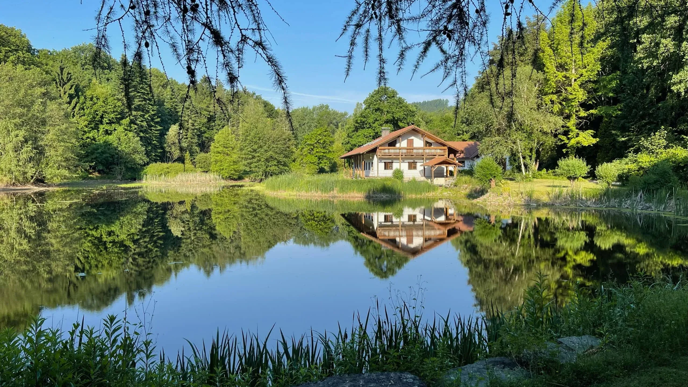
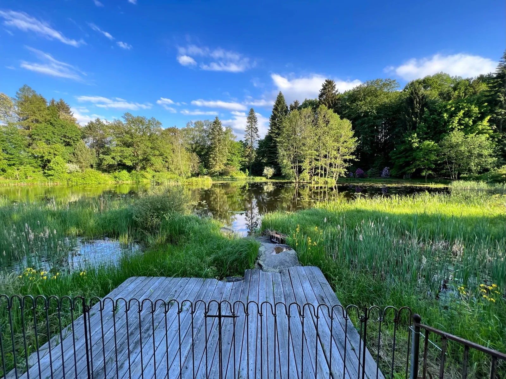
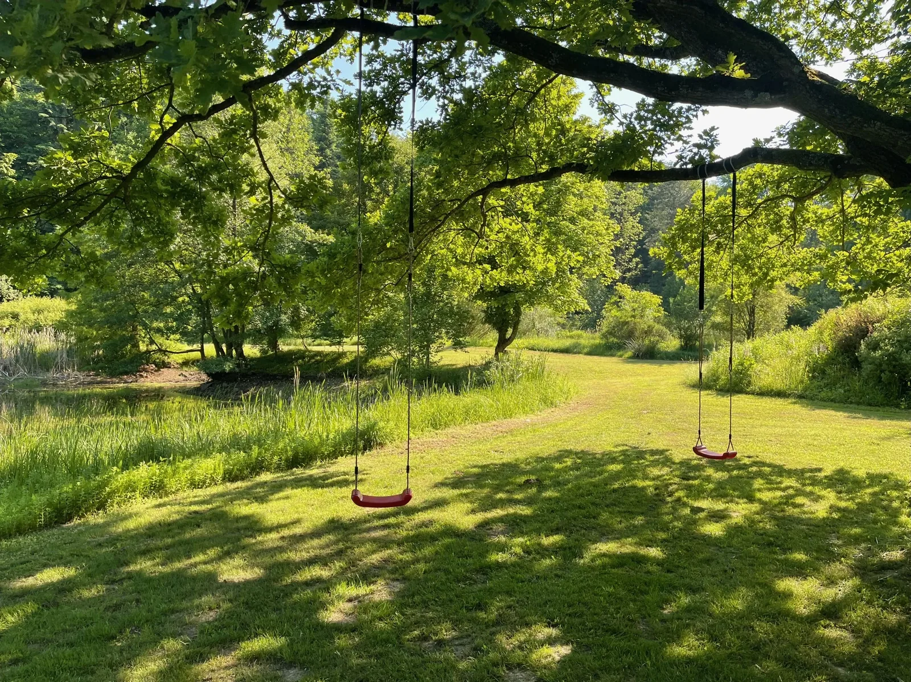
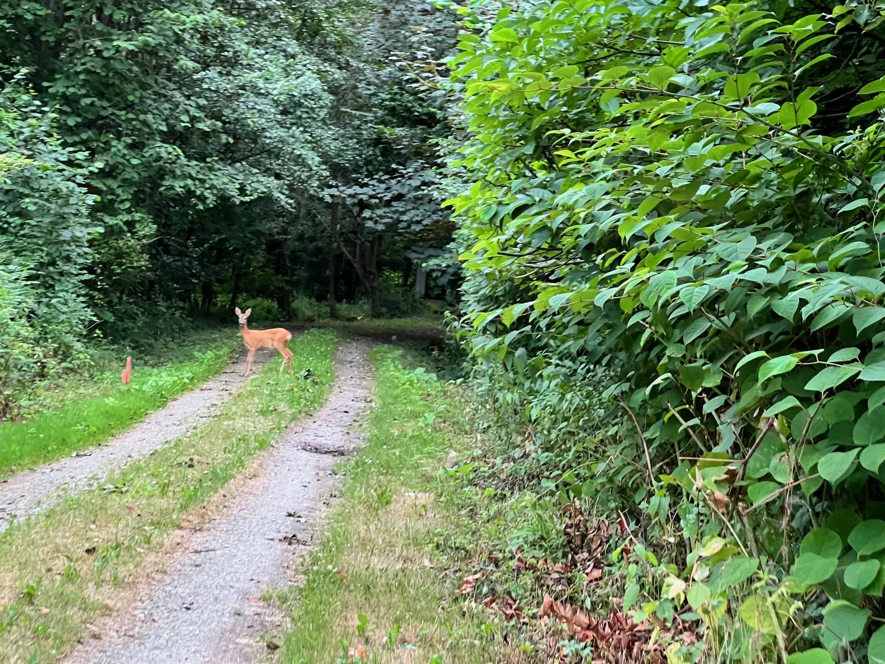
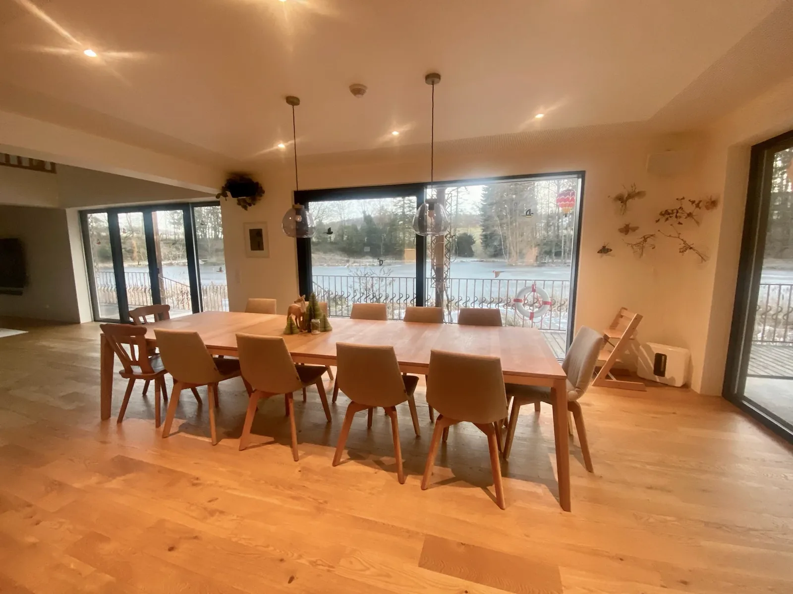
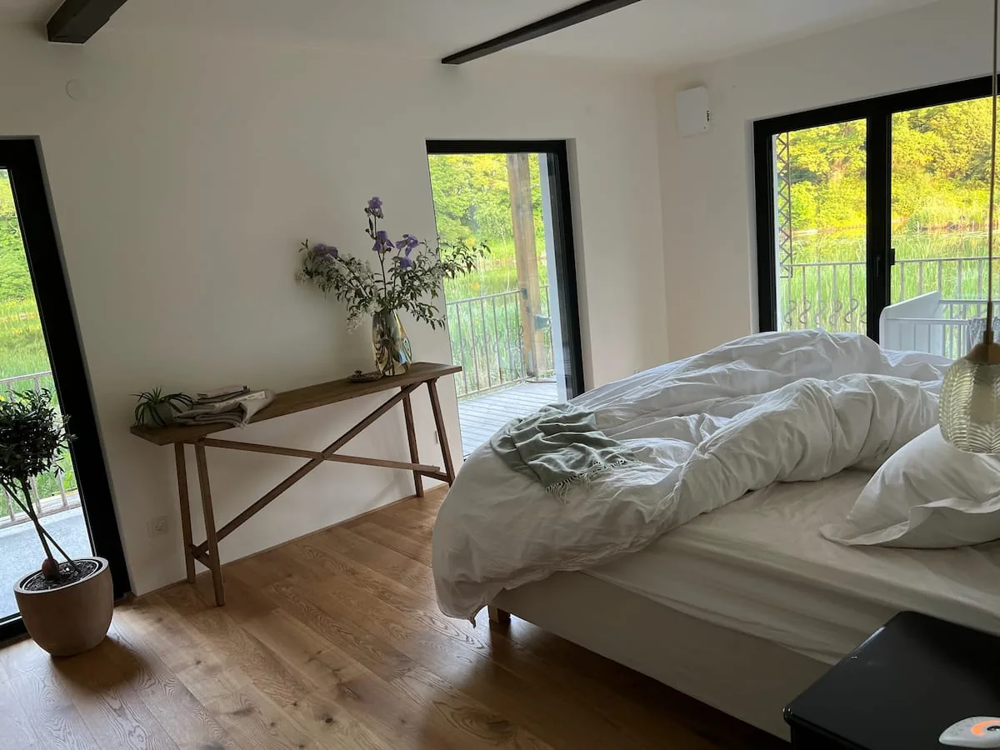
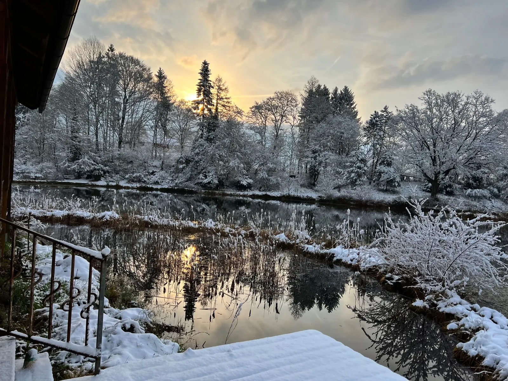
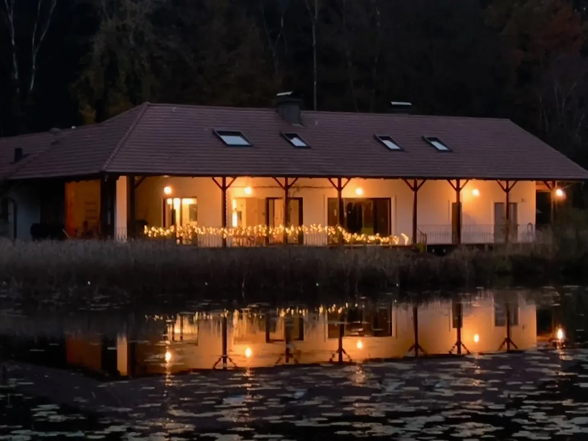

TEICHHOF · MAISON DE VACANCES EN BASSE-AUTRICHE
Un lieu.
Rien que pour vous.
Un étang privé. Une maison au bord des bois.
Un lieu qui n’appartient qu’à vous.
BIENVENUE AU TEICHHOF
Arriver ensemble.
Rester ensemble.
Regarder l’eau jusqu’à laisser refroidir son café. Cuisiner ensemble, parler pendant des heures. Et réaliser que personne n’a regardé l’heure de la journée.
Le Teichhof est une maison de vacances avec étang privé près de Melk, en Basse-Autriche. Toute la maison est à vous : pour des vacances en famille, des retrouvailles entre amis ou quelques jours de calme à la lisière de la forêt.

LA NATURE DONNE LE RYTHME
Seulement
cet instant.
Quelques coups de rame sur l’étang.
Voir le monde depuis l’eau.
Et n’avoir rien de prévu pendant un moment.

SANS HORAIRES. SANS OBLIGATIONS.
Simplement
être ici.

LES PLUS BELLES RENCONTRES SONT IMPRÉVUES
Ici, vous êtes invités.
Au cœur de la nature.
Des chevreuils à la lisière, des poissons sous la surface, des oiseaux dans les arbres. Castors et lièvres vivent aussi autour du Teichhof. Parfois, une loutre se laisse apercevoir.
Un endroit tranquille et un peu de patience. Il n’en faut souvent pas plus pour faire une découverte.
Les animaux sauvages suivent leur propre rythme. Chaque rencontre est un cadeau.DU TEMPS POUR CEUX QUI COMPTENT
Toute la famille.
Un lieu pour se retrouver.
Un anniversaire. Des retrouvailles. Trois générations autour d’une table. Ce sont ces journées qui restent : cuisiner ensemble, profiter du dehors, voir les enfants explorer.
Et quand l’après-midi se prolonge en soirée, personne n’a besoin de reprendre la route.
Préparer votre escapade

VOTRE CHEZ-VOUS LE TEMPS D’UN SÉJOUR
De l’espace à partager.
De l’espace pour soi.
Le rez-de-chaussée est entièrement rénové : cuisine avec îlot et machine à expresso, grande table pour tous, Wi-Fi et espace de travail. À l’étage, les chambres ont gardé leurs parquets d’origine. Après une journée ensemble, chacun retrouve son coin de tranquillité.
Toute la maison pour 10 personnes. Arrivée à partir de 15 h, départ avant 11 h.
Vérifier les disponibilitésL’ESPRIT DES LIEUX
Instants au Teichhof.
Le confort dedans. La nature dehors.
Trouvez votre coin préféré.
TOUTE L’ANNÉE
Les saisons changent.
Le sentiment demeure.
LA NATURE DE TOUT PRÈS
CHEZ SOI, À L’INTÉRIEUR

BIEN PLUS QU’UN REFUGE D’ÉTÉ
Dehors, le calme s’installe.
Dedans, le temps vous appartient.
Pour de longues conversations. Pour un bon livre.
Pour des journées sans programme.
LES SOUVENIRS RACONTÉS PAR NOS HÔTES
Des souvenirs
à emporter chez vous.
C’était exactement le bon choix pour un mois de villégiature estivale.
Kath a passé un mois au Teichhof en famille et évoque avec enthousiasme les observations de la nature avec les enfants, le calme et la maison aménagée avec goût.
L’étang est immense
Lara raconte cinq jours entre amis et un jardin qui, à lui seul, offrait toute une journée de découvertes.
un merveilleux week-end
Anja Teresa a séjourné avec grands-parents, enfants et petits-enfants, partageant du temps dans la maison, le jardin et au bord de l’étang.
Courts extraits d’avis Airbnb traduits de l’allemand ; les descriptions complémentaires sont des résumés. · Avis sur Airbnb
Questions sur le Teichhof
Où se trouve Teichhof ?
Teichhof se trouve à Steinparz 26, 3382 Schollach, en Basse-Autriche, en lisière de forêt avec un étang privé. L’abbaye de Melk est à 8,6 km, l’autoroute A1 à 6,7 km, le supermarché le plus proche à 6 km et le restaurant le plus proche à 330 m. Comment venir
Combien y a-t-il de pièces et de lits ?
La maison compte sept pièces avec un lit king size, quatre lits queen size, deux lits simples et un canapé-lit queen size, ainsi que trois salles de bains. Elle accueille 10 personnes. Voir le plan
Réserve-t-on toute la maison ?
Oui, vous réservez le logement entier. Le Teichhof comprend un étang privé, une barque et un jardin.
Quels sont les horaires d’arrivée et de départ ?
L’arrivée se fait à partir de 15 h, le départ avant 11 h. L’arrivée est autonome grâce à une serrure électronique : une arrivée tardive ne pose donc aucun problème.
Y a-t-il un parking ?
Oui, la propriété dispose de quatre places de stationnement gratuites, dont une dans un garage.
Les animaux sont-ils acceptés ?
Oui, les animaux sont les bienvenus, jusqu’à 3 par séjour, moyennant un supplément de 59 € par animal et par séjour. Signalez-nous vos animaux lors de la réservation ou envoyez-nous une demande.
La propriété est-elle clôturée ?
L’ensemble du vaste terrain est clôturé. Une clôture supplémentaire autour du jardin le sépare de l’étang et empêche les enfants d’accéder directement à l’eau depuis le jardin.
Peut-on organiser une fête ?
Les anniversaires et les réunions de famille sont les bienvenus. Mariages et fêtes ne sont possibles que sur réservation directe : contactez-nous.
Le petit-déjeuner est-il inclus ?
Non, Teichhof est un hébergement en gestion libre, avec une cuisine équipée d’un îlot et d’une machine à expresso. Le supermarché le plus proche est à 6 km, le restaurant le plus proche à 330 m.
Comment réserver ?
Les disponibilités et les prix actuels se trouvent dans la rubrique réservation de cette page. Pour toute question sur le séjour ou une réunion familiale, utilisez le formulaire de contact.

VOTRE PROCHAIN SOUVENIR PARTAGÉ
Votre prochain lieu préféré
vous attend.
Pour retrouver la famille. Pour quelques jours de calme.
Trouvez votre temps au Teichhof.
Des questions sur votre séjour ?
Envoyez une demande sans engagement. Nous répondrons par e-mail.